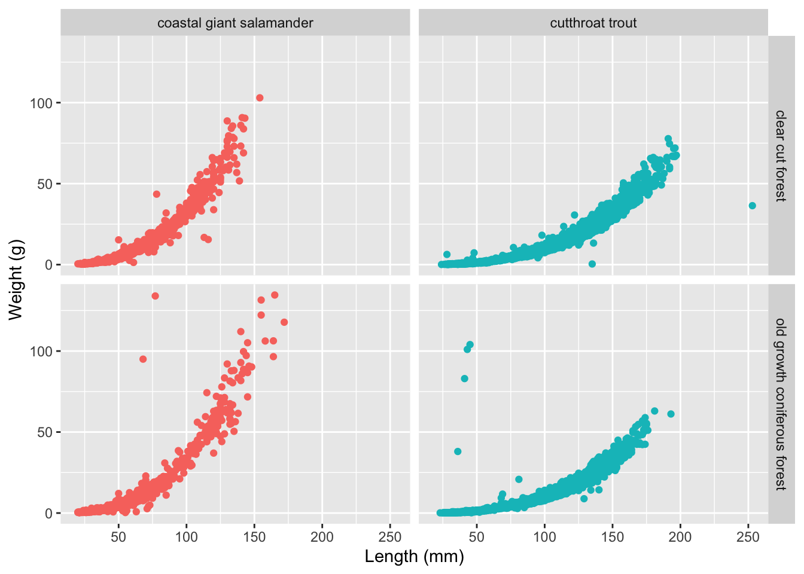
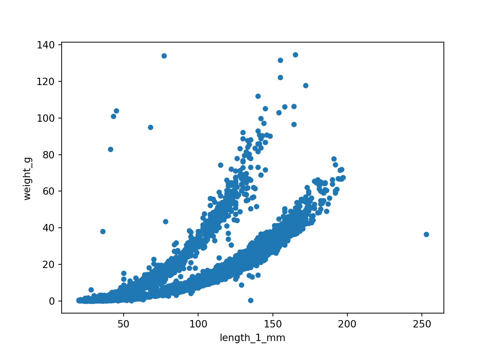

import pandas as pd
trout_salamander_py = pd.read_csv('data/and_vertebrates.csv')Data Wrangling with R and Python
The purpose of this document is to illustrate common data wrangling commands with R and Python. These examples use data from the lterdatasampler package.
Basics - getting to know your data
The and_vertebrates dataset includes trout and salamander observations from Mack Creek which is part of the Andrews Forest LTER. ::: {.cell}
library(tidyverse)
trout_salamander_R <- read_csv('data/and_vertebrates.csv'):::
Head and Tail
Head returns the first few rows of the data frame and tail returns the last rows. The integer in the examples below is optional and used to specify the number of rows returned. ::: {.cell .column-page}
head(trout_salamander_R, 5) # include an integrer is you want to specify the number of rows returned# A tibble: 5 × 16
year sitecode section reach pass unitnum unittype vert_index pitnumber
<dbl> <chr> <chr> <chr> <dbl> <dbl> <chr> <dbl> <dbl>
1 1987 MACKCC-L CC L 1 1 R 1 NA
2 1987 MACKCC-L CC L 1 1 R 2 NA
3 1987 MACKCC-L CC L 1 1 R 3 NA
4 1987 MACKCC-L CC L 1 1 R 4 NA
5 1987 MACKCC-L CC L 1 1 R 5 NA
# … with 7 more variables: species <chr>, length_1_mm <dbl>, length_2_mm <dbl>,
# weight_g <dbl>, clip <chr>, sampledate <date>, notes <chr>tail(trout_salamander_R)# A tibble: 6 × 16
year sitecode section reach pass unitnum unittype vert_index pitnumber
<dbl> <chr> <chr> <chr> <dbl> <dbl> <chr> <dbl> <dbl>
1 2019 MACKOG-U OG U 2 16 C 21 NA
2 2019 MACKOG-U OG U 2 16 C 22 NA
3 2019 MACKOG-U OG U 2 16 C 23 1043503
4 2019 MACKOG-U OG U 2 16 C 24 1043547
5 2019 MACKOG-U OG U 2 16 C 25 1043583
6 2019 MACKOG-U OG U 2 16 C 26 1043500
# … with 7 more variables: species <chr>, length_1_mm <dbl>, length_2_mm <dbl>,
# weight_g <dbl>, clip <chr>, sampledate <date>, notes <chr>::: :::{.column-body-outset} ::: {.cell .column-screen}
trout_salamander_py.head(5) # include an integrer is you want to specify the number of rows returned year sitecode section reach ... weight_g clip sampledate notes
0 1987 MACKCC-L CC L ... 1.75 NONE 1987-10-07 NaN
1 1987 MACKCC-L CC L ... 1.95 NONE 1987-10-07 NaN
2 1987 MACKCC-L CC L ... 5.60 NONE 1987-10-07 NaN
3 1987 MACKCC-L CC L ... 2.15 NONE 1987-10-07 NaN
4 1987 MACKCC-L CC L ... 6.90 NONE 1987-10-07 NaN
[5 rows x 16 columns]trout_salamander_py.tail() year sitecode section reach ... weight_g clip sampledate notes
32204 2019 MACKOG-U OG U ... 7.9 NONE 2019-09-05 NaN
32205 2019 MACKOG-U OG U ... 8.7 NONE 2019-09-05 NaN
32206 2019 MACKOG-U OG U ... 9.6 NONE 2019-09-05 NaN
32207 2019 MACKOG-U OG U ... 14.3 NONE 2019-09-05 NaN
32208 2019 MACKOG-U OG U ... 11.6 NONE 2019-09-05 Terrestrial
[5 rows x 16 columns]::: :::
Class / Type
class(trout_salamander_R)[1] "spec_tbl_df" "tbl_df" "tbl" "data.frame" #type(trout_salamander_py)Shape
Here R and Python both tell us that the dataframe has 32209 rows and 16 columns.
dim(trout_salamander_R) # returns the number of rows and columns in a data frame[1] 32209 16nrow(trout_salamander_R)[1] 32209ncol(trout_salamander_R)[1] 16trout_salamander_py.shape(32209, 16)trout_salamander_py.shape[0] # number of rows32209trout_salamander_py.shape[1] # number of columns16Summary / Describe
summary(trout_salamander_R) year sitecode section reach
Min. :1987 Length:32209 Length:32209 Length:32209
1st Qu.:1998 Class :character Class :character Class :character
Median :2006 Mode :character Mode :character Mode :character
Mean :2005
3rd Qu.:2012
Max. :2019
pass unitnum unittype vert_index
Min. :1.000 Min. : 1.000 Length:32209 Min. : 1.00
1st Qu.:1.000 1st Qu.: 3.000 Class :character 1st Qu.: 5.00
Median :1.000 Median : 7.000 Mode :character Median : 13.00
Mean :1.224 Mean : 7.696 Mean : 20.17
3rd Qu.:1.000 3rd Qu.:11.000 3rd Qu.: 27.00
Max. :2.000 Max. :20.000 Max. :147.00
pitnumber species length_1_mm length_2_mm
Min. : 62048 Length:32209 Min. : 19.00 Min. : 28.0
1st Qu.:13713632 Class :character 1st Qu.: 47.00 1st Qu.: 77.0
Median :18570447 Mode :character Median : 63.00 Median : 98.0
Mean :16286432 Mean : 73.83 Mean :100.5
3rd Qu.:19132429 3rd Qu.: 97.00 3rd Qu.:119.0
Max. :28180046 Max. :253.00 Max. :284.0
NA's :26574 NA's :17 NA's :19649
weight_g clip sampledate notes
Min. : 0.090 Length:32209 Min. :1987-10-06 Length:32209
1st Qu.: 1.510 Class :character 1st Qu.:1998-09-04 Class :character
Median : 6.050 Mode :character Median :2006-09-06 Mode :character
Mean : 8.903 Mean :2005-08-05
3rd Qu.: 11.660 3rd Qu.:2012-09-05
Max. :134.590 Max. :2019-09-05
NA's :13268 trout_salamander_py.describe() year pass ... length_2_mm weight_g
count 32209.000000 32209.000000 ... 12560.000000 18941.000000
mean 2004.917601 1.223664 ... 100.485191 8.902859
std 8.572474 0.416706 ... 34.736955 10.676276
min 1987.000000 1.000000 ... 28.000000 0.090000
25% 1998.000000 1.000000 ... 77.000000 1.510000
50% 2006.000000 1.000000 ... 98.000000 6.050000
75% 2012.000000 1.000000 ... 119.000000 11.660000
max 2019.000000 2.000000 ... 284.000000 134.590000
[8 rows x 8 columns]trout_salamander_py.info()<class 'pandas.core.frame.DataFrame'>
RangeIndex: 32209 entries, 0 to 32208
Data columns (total 16 columns):
# Column Non-Null Count Dtype
--- ------ -------------- -----
0 year 32209 non-null int64
1 sitecode 32209 non-null object
2 section 32209 non-null object
3 reach 32209 non-null object
4 pass 32209 non-null int64
5 unitnum 32209 non-null float64
6 unittype 31599 non-null object
7 vert_index 32209 non-null int64
8 pitnumber 5635 non-null float64
9 species 32206 non-null object
10 length_1_mm 32192 non-null float64
11 length_2_mm 12560 non-null float64
12 weight_g 18941 non-null float64
13 clip 32209 non-null object
14 sampledate 32209 non-null object
15 notes 3174 non-null object
dtypes: float64(5), int64(3), object(8)
memory usage: 3.9+ MBVariable Names
names(trout_salamander_R) # returns column names of a data frame [1] "year" "sitecode" "section" "reach" "pass"
[6] "unitnum" "unittype" "vert_index" "pitnumber" "species"
[11] "length_1_mm" "length_2_mm" "weight_g" "clip" "sampledate"
[16] "notes" trout_salamander_py.columnsIndex(['year', 'sitecode', 'section', 'reach', 'pass', 'unitnum', 'unittype',
'vert_index', 'pitnumber', 'species', 'length_1_mm', 'length_2_mm',
'weight_g', 'clip', 'sampledate', 'notes'],
dtype='object')xxx unique class(penguins$species) # determine the data type of a given column
Filtering
Grouping
Statistics
mean, median, mode
stats of a group
New Columns
Visualizations
trout_salamander_R <- trout_salamander_R %>%
drop_na(species) %>%
filter(species != 'Cascade torrent salamander')
species_names <- c('Cutthroat trout' = 'cutthroat trout',
'Coastal giant salamander' = 'coastal giant salamander')
section_names <- c('CC' = 'clear cut forest',
'OG' = 'old growth coniferous forest')
ggplot(data = trout_salamander_R, aes(x = length_1_mm, y = weight_g)) +
geom_point(aes(color = species), show.legend = FALSE) +
labs(x = "Length (mm)",
y = "Weight (g)",
color = "Species") +
facet_grid(section ~ species, labeller = labeller(section = section_names, species = species_names))
import matplotlib.pyplot as plt
trout_salamander_py.plot(x='length_1_mm', y='weight_g', kind='scatter')
plt.show()
Putting it all together
This content can be styled with a border
Blockquote
library(leaflet)Warning: package 'leaflet' was built under R version 4.1.2leaflet() %>%
addTiles() %>% # Add default OpenStreetMap map tiles
addMarkers(lng=174.768, lat=-36.852, popup="The birthplace of R")xxx

Some text for the margin
playing with layouts
This column takes 1/3 of the page
This column takes 2/3 of the page
xxx
This column takes 1/2 of the page
names(trout_salamander_R) # returns column names of a data frame [1] "year" "sitecode" "section" "reach" "pass"
[6] "unitnum" "unittype" "vert_index" "pitnumber" "species"
[11] "length_1_mm" "length_2_mm" "weight_g" "clip" "sampledate"
[16] "notes" This column takes 1/2 of the page
trout_salamander_py.columnsIndex(['year', 'sitecode', 'section', 'reach', 'pass', 'unitnum', 'unittype',
'vert_index', 'pitnumber', 'species', 'length_1_mm', 'length_2_mm',
'weight_g', 'clip', 'sampledate', 'notes'],
dtype='object')Citation
Horst A, Brun J (2022). lterdatasampler: Educational dataset examples from the Long Term Ecological Research program. R package version 0.1.0, https://github.com/lter/lterdatasampler.